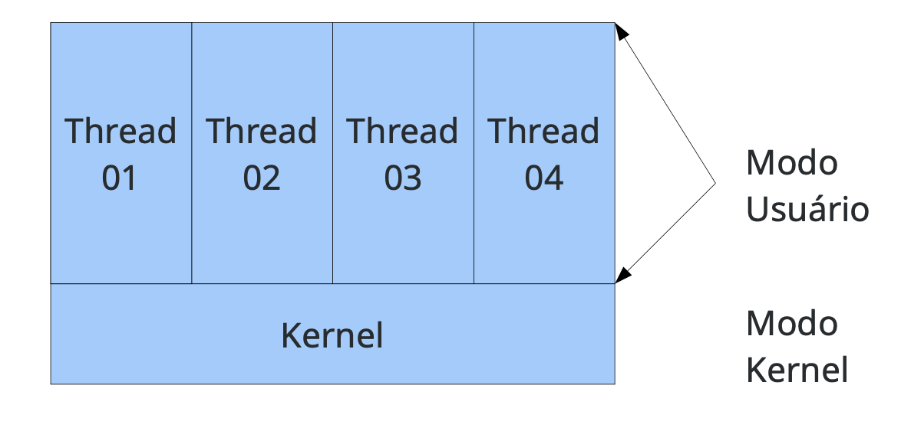
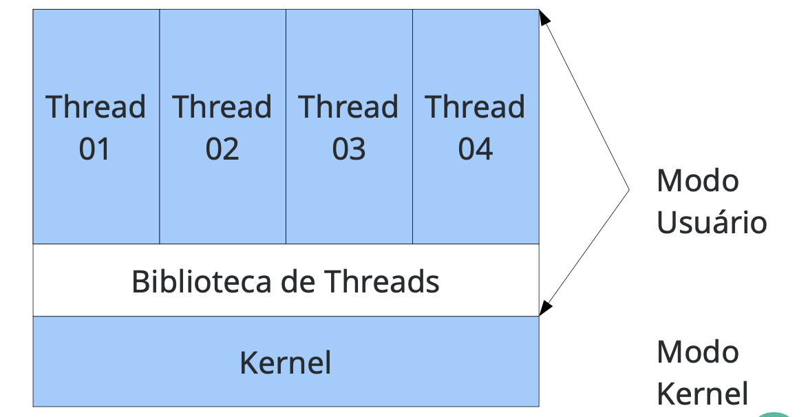
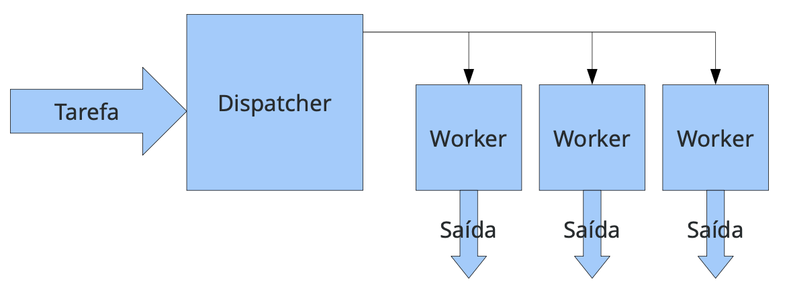
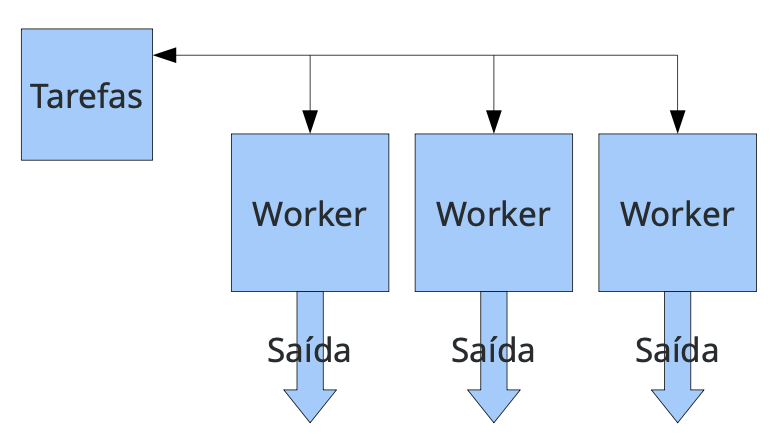
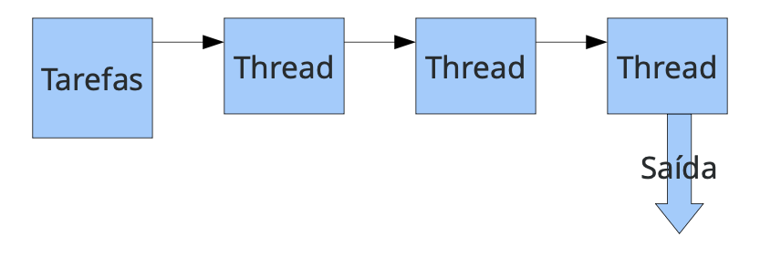
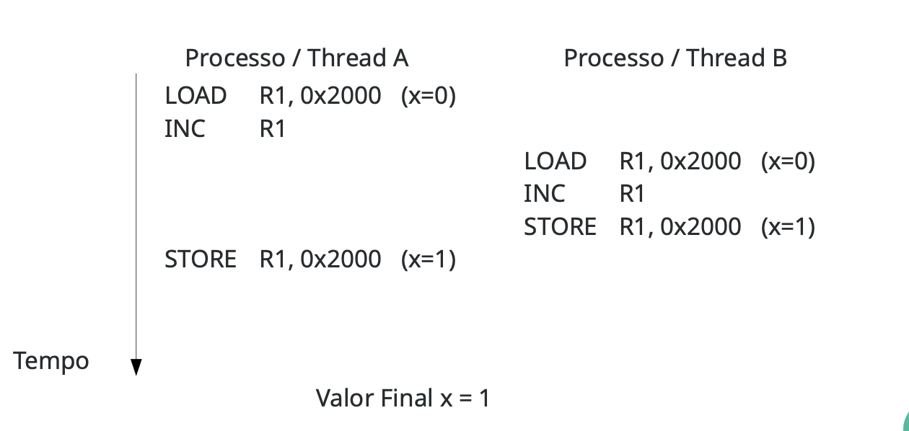
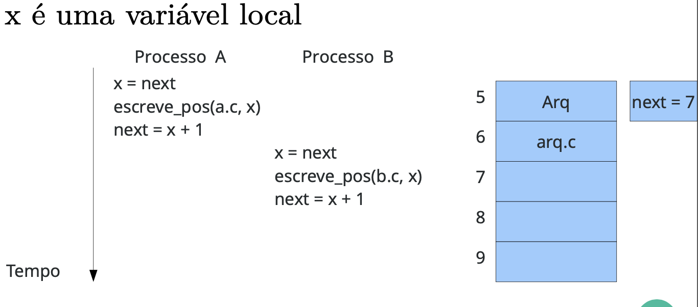
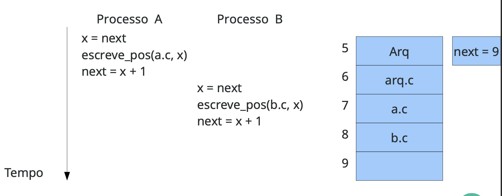
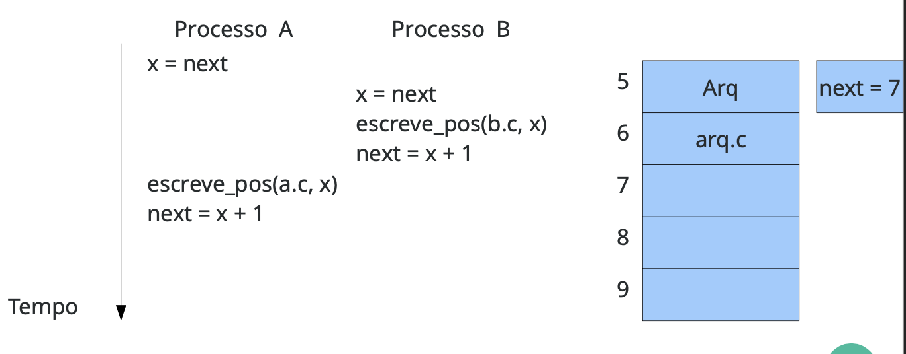
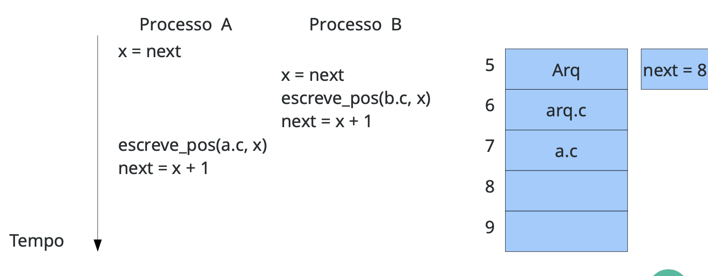

Threads
- Threads separam conceitos de agrupamento de recursos e execução.
- Processos agrupam recusos
- Threads são escalonadas para execução
- Permitem que múltiplas execuções ocorram no mesmo ambiente
- Devido a maior simplicidade de escalonamento são chamadas de "Processos leves"
- No Multithread, a entidade processo é dividida em processo e thread
- Thread correspondeo ao estado de execução
- No modelo mutlithread existem duas entidade na tabela de processo
- Threads compartilham as mesma varáveis globais
- A proteção dos threads é de responsabilidade do programador
- A pilha é uma estrutura em memória, porem cada thread possui sua própria pilha e não compartilha esses dados com outras threads
- As threads chamam procedimentos diferentes em tempos diferentes
- Chamadas de controle de threads:
- thread_create: Cria uma thread nova, passando uma função como argumentos para iniciar a execução
- thread_exit: Termina a thread em execução
- thread_yield: Permite que uma thread desista voluntariamente da CPU
Por que utilizar múltiplas threads?
- Pelo mesmo motivo que processos concorrentes são melhores que sem concorrência
- Threads possuem troca de contexto mais leve que processos
- Procemos dividir o programa caso exista muitas chamadas blocantes, se as chamadas blocantes forem de diversas fontes melhora-se o tempo
- Para explorar melhor os recursos da máquina
- A intel fez uma campanha avisando que a tendência é aumentar o número de núcleos, não a velocidade deles
- Threads são mais fáceis de cirar e destruir que processos, pois só precisa de uma área alocada
- Em alguns sistemas, criar uma thread é 100 vezes mais rápido que criar um processo
- É um modelo de programação mais simples
- Quando um programa deve tratar dados de diversas fontes:
A arte de Multiprogramar
Porem há questões que foram levantadas:
- Fork(): Quando o pai cria o processo filho, ele deve conter o mesmo tanto de threads que o pai ou apenas um? APENAS UMA THREAD
- Escalonamento: Uma thread estiver bloqueada esperando dados do teclado, ele deveria ser bloqueado?
- O compartilhamento de dados pode causar muitos problemas
- O que acontece quando uma thread fecha um arquivo que outra thread está lendo? -<
- Alguns desafios são solucionados com boas práticas de programação
Multithreading Programming -> Expectation vs Reality
Implementação de Threads
Para implementação das threads, existem diferentes formas para sua implementação. Implementar o modelo de processos e threads a nível de sistema operacional, criando abstrações de processos e de threads
- Implementar threads no sistema operacional
- O kernel do S.O deve criar as threads, organiza seu escalonamento e término
- Existência de uma tabela de threads no kernel, que contém os dados de cada thread
- É necessário uma biblioteca de threads, para evitar overhead de contexo entre as threads
- O núcleo vai ver a bibiolteca de threads em modo usuário
Implementação em modo Kernel

- Geralmente o escalonador do S.O é não-preemptivo
- Cada processo precisa de sua própria tabela de threads
- Threads manipuladas por funções
- Quando uma thread dor perder o controle, ela chama o procedimento do ambiente para selecionar outra thread
- Troca de contexto muito rápida entre as threads
- Cada processo pode ter seu próprio algoritmo de escalonamento
- Desvantagens
- Muito cuidado ao usar chamadas bloquantes do sistema, elas rião bloquear todas as threads.
- A solução é colocar uma "capa" antes de todas as chamadas blocantes do sistema. Desta forma quando uma chamada blocante for realizada ela é mascarada pela biblioteca de threads que faz o teste de bloqueio
- Pacote POSIX threads
Implementação de Threads em Modo Usuário

- Enquanto utilizar threads no espaço de usuário reduz o custo de troca, as operações de I/O exigem mais e podem bloquear as outras threads
- Implementar as threads em S.O continua inserindo um custo caro de troca de contexto
Threads em Modo Híbrido
- Busca juntar as vantagens dos threads em modo kernel e modo usuário
- Um processo pode ter várias threads de kernel, por usa vez cada kernel pode conter diversar threads em modo usuário

Comparativo de threads em Diversos S.O

Modelo de Execução de Threads
- Número de threads que queremos utilizar:
- Estática: Não muda durante a execução, número fixo.
- Dinâmica: Uma thread é criada para tratar cada requisição.
Modelo Despachante/Trabalhador
- Uma thread dispachante é reposnável por receber trabalho, porém não processa
- O despachante seleciona uma thread trabalhadora para entregar o trabalho
- A trabalhadora executa a solicitação e sinaliza o despachante

Um exemplo desse modelo é o servidor web, que pode sofrer várias requisições de diversos clientes, essas requisições podem envolver leitura de disco. Se a mesma thread recebe uma nova requisição e ler o disco, pode-se ter um problema.
Vantagens
- Consumo rápido de mensagens
- Boa distribuição das requisições
- flexibilidade, podemos mudar o número de threads de forma fácil
Desvantagens
- Pouco uso de CPU pela thread despachante
- por exemplo, de 4 threads trabalhadora e 1 despachante, em aglguns beanchmarks pode considerar apenas 80% do uso total de CPU.
Modelo Time
Nesse modelo as threads são autônomas e gulosas por serviço, elas acessam um "poll" de tarefa, obtém e as executam.

Vantagens
- Bom consumo de mensagens
- Boa distribuiçãi de mensagens
- Flexibilidade em mudar o número de tarefas
Desvantagens
- Cuidado na implementação, em alguns computadores modernos, uma thread inicia o programa de deve ser responsável por criar todas as outras, depois disso, ela deve se tornar uma thread normal do time.
Modelo Pipeline
Nesse modelo, cada thread realiza uma tarefa específica produzinfo dados de entrada de outra thread, os dados de saída final são produzidos pela última thread.

Desvantagens
-
Se uma thread for muito mais lenta que as outras, todo o processamento é desperdição
-
Muitas vezes não é fácil dividir a tarefa em um pipeline
-> qual a vantagem dela entre as outras
A arte de Multiprogramar 2
Convertendo código monothread em código multithread é um tarefa difícil, especialmente com variáveis globais
Ex.:
- não-thread-safe
int vetor[256];
int thread(int val, int pos){
vetor[pos] = val;
}
- thread-safe
int thread(int val, int pos){
int vetor[256];
vetor[pos] = val;
}
Dessa forma definidas variáveis globais em sistemas Unix e são amplamente utilizadas. Ex.: errno.
- Recebe dados via rede, verifica se vai bloquear
while(1) {
int len = recv(socket_client, buf, sizeof(buf), 0);
if(len == -1){
if(errno != EAGAIN && errno != EWOULDBLOCK) {
...
return -1;
}
}
}
- Esse problema pode acontecer com chamadas de sistema, por exemplo, alocar uma região de 10 inteiros na memória para o programa.
- O probelma é, e se houver uma troca de contexto no meio da chamada? o malloc salva informações em uma tabela global de memórias
- Utilizar varáveis compartilhadas entre as threads requer cuidado.
- Em computadores modernos, a ordem de execução é definida pelo SO
- Algum desses problemas são conhecidas como condições de Corrida.
Condição de Corrida
São também conhecidos como condições de disputa, como o SO determina através do seu escalonador como os processos irão executar, não sabemos a ordem que os processos podem executar.
-
TROCAS DE CONTEXTO PODEM ACONTECER A QUALQUER MOMENTO!!
-
Considere os seguintes processos/threads incremendando uma varável em memória compartilhada
-
Considere, x = 0 inicialmente. Quais valores possíveis que x pode obter ao final?
-
Escalonamento: A -> B

- Escalonamento: A -> B -> A

-
Esse comportamento tede a ser bem indesejável, afinal na cabeça do programador "A variável X foi incrementada duas vezes"
-
O debug dessas operações podem ser extremamente complexo.
Condições de corrida 2
Imagina que um servidor de impressão enumere as vagas dos arquivos impressos 0, 1, 2, ... - Uma variável next aponta para a próxima posição livre a ser impressa - Imagina agoora que o processo A e B desejaram imprimir um arquivo e o servidor está com a seguinte configuração
- Escalonamento A -> B

depois...

- Escalonamento A -> B -> A

depois ...

- Precisa-se assegurar que os processos que estejam trabalhando na mesma região de memória não sejam interrompidos, ou aguardem o término do outro processo antes de iniciar suas atividades. Esse processo é conhecido como exclusão mútua.
Regiões Críticas
-
O trecho de código que há acesso de leitura ou escrita à dados compartilhados é chamado de seção crítica.
-
No primeiro exemplo a seção crítica é a operação de incremento, no segundo é toda a operação de escrever, a seção crítica normalmente é MAIS de uma instrução.
-
Para evitar as condições de corrida, são colocadas funções antes de entrar e depois de sair da seção crítica.
-
Essas funções utilizam diversas técnicas para impedir que os dois processos estejam simultaneamente na seção crítica e garantir a exclusão mútua.
-
Existem funções que utilizam diversas técnicas para impedir que dois processos estejam simultaneamente na seção crítica e garantir a exclusão mútua.
Variáveis de impedimento
- Variável de impedimento busca marcar se existe algúem na seção crítica. Se for 1, não procede.
int thread(){
while (true) {
while (lock == 1) {}
lock = 1;
regiao_critica();
lock = 0;
}
}